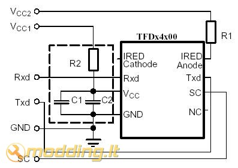
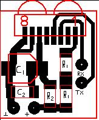
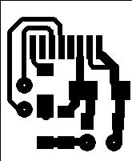
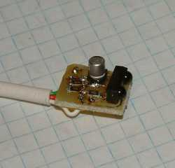
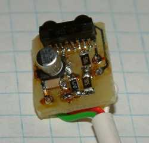

IrDa - pajunk telefoną prie PC
Trumpai
Dauguma šiuolaikinių telefonų turi infraraudonųjų spindulių sąsają. Ji patogi tuom, kad pakeičia laidą. O svarbiausias jos privalumas - ji tinka visiems telefonams su IrDA ir pasikeitus aparatą nereikia pirkti naujo kabelio. Vienintelis IrDa adapterio trūkumas - su juo negalėsite "flašint" savo telefono.
Detalės
Įrenginuko schema:

Taigi ko mums prireiks:
- TFDU4100 - pagrindinė ir brangiausia dalis (galima naudoti ir kitokius, pvz TFDS4500, tik tada neatitiks plokštės brėžinys).
- SMD 4,7uF kondencatorius.
- SMD 0,1uF kondencatorius.
- dvi 7 omų SMD varžos.
- 47 omų SMD varža.
- gyslų ekranuoto kabeliuko(ilgis rekomenduojamas iki 2m, jei rasit 3 gysly ekranuota tai minusui naudokite ekraną).
- jungtis į kompą. Tai priklauso nuo kiekvieno kompo. Dažniausiai būna 1x5 (viena eilė 5 kontaktai) arba 2x3 (dvi eilės po 3 kontaktus) jungtys.
Gamyba
Taigi pasigaminame plokštelę. Tam pasinaudojame stiklotekstolito dengtu fotorezistų gabaliuku arba naudojamės savais plokščių gaminimo būdais.
Apie ploštelių gaminimo būda su fotorezistu galite pasiskaityti čia.
Bendras plokštės vaizdas ir pačios plokštės takeliai:
 
Rekomenduociau spausdinti su SprinLayout programele, kurią rasite čia.
Pasigaminus plokštelę belieka išsigręžt 4 skylutes ir prilituoti elementus į savo vietas .
 
Na ir galiausiai pasinaudojame dangteliu nuo markerio + raudonu filtru ir galutinį vaizdą gauname tokį:
Mažas ir pakankamai išvaizdus. Bendra savikaina gaunasi ~ 20 lt (parduotuvėse >50Lt )Sėkmės gamyboje.


{kind=link}
{kind=link}